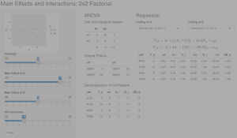

Chapter 4 Interactions
4.1 Learning objectives
- model and interpret continuous-by-categorical interactions
- model and interpret categorical-by-categorical interactions in factorial designs
- estimate and test effects in factorial designs using ANOVA or regression
4.2 Interactions
Up to now, we’ve been focusing on estimating and interpreting the effect of a variable or linear combination of predictor variables on a response variable. However, there are often situations where the effect of one predictor on the response depends on the value of another predictor variable. We can actually estimate and interpret this dependency as well, by including an interaction term in our model.
4.3 Continuous-by-Categorical Interactions
One common example of this is when you are interested in whether a linear relationship between a continous predictor and a continuous response is different for two groups.
Let’s consider a simple fictional example. Say you are interested in the effects of sonic distraction on cognitive performance. Each participant in your study is randomly assigned to receive a particular amount of sonic distraction while they perform a simple reaction time task (respond as quickly as possible to a flashing light). You have a technique that allows you to automatically generate different levels of background noise (e.g., frequency and amplitude of city sounds, such as sirens, jackhammers, people yelling, glass breaking, etc.). Each participant performs the task for a randomly chosen level of distraction (0 to 100). Your hypothesis is that urban living makes people’s task performance more immune to sonic distraction. You want to compare the relationship between distraction and performance for city dwellers to the relationship for people from quieter rural environments.
You have three variables:
- A continuous response variable,
mean_RT, with higher levels reflecting slower RTs; - A continuous predictor variable, level of sonic distraction (
dist_level), with higher levels indicating more distraction; - A factor with two levels,
group(urban vs. rural).
Let’s start by simulating some data for the urban group. Let’s assume that with zero distraction (silence), the average RT is about 450 milliseconds, and that with each unit increase on the distraction scale, RT increases about 2 ms. This gives us the following linear model:
\[Y_i = 450 + 2 X_i + e_i\]
where \(X_i\) is the amount of sonic distraction.
Let’s simulate data for 100 participants as below with \(\sigma = 80\), setting the seed before we begin.
library("tidyverse")
set.seed(1031)
n_subj <- 100L # simulate data for 100 subjects
b0_urban <- 450 # y-intercept
b1_urban <- 2 # slope
# decomposition table
urban <- tibble(
subj_id = 1:n_subj,
group = "urban",
b0 = 450,
b1 = 2,
dist_level = sample(0:n_subj, n_subj, replace = TRUE),
err = rnorm(n_subj, mean = 0, sd = 80),
simple_rt = b0 + b1 * dist_level + err)
urban## # A tibble: 100 x 7
## subj_id group b0 b1 dist_level err simple_rt
## <int> <chr> <dbl> <dbl> <int> <dbl> <dbl>
## 1 1 urban 450 2 59 -36.1 532.
## 2 2 urban 450 2 45 128. 668.
## 3 3 urban 450 2 55 23.5 584.
## 4 4 urban 450 2 8 1.04 467.
## 5 5 urban 450 2 47 48.7 593.
## 6 6 urban 450 2 96 88.2 730.
## 7 7 urban 450 2 62 110. 684.
## 8 8 urban 450 2 8 -91.6 374.
## 9 9 urban 450 2 15 -109. 371.
## 10 10 urban 450 2 70 20.7 611.
## # … with 90 more rowsLet’s plot the data we created, along with the line of best fit.
ggplot(urban, aes(dist_level, simple_rt)) +
geom_point(alpha = .2) +
geom_smooth(method = "lm", se = FALSE)## `geom_smooth()` using formula 'y ~ x'
Figure 4.1: Effect of sonic distraction on simple RT, urban group.
Now let’s simulate data for the urban group. We assume that these participants should perhaps have a little higher intercept, maybe because they are less familiar with technology. Most importantly, we assume that they would have a steeper slope because they are more affected by the noise. Something like:
\[Y_i = 500 + 3 X_i + e_i\]
b0_rural <- 500
b1_rural <- 3
rural <- tibble(
subj_id = 1:n_subj + n_subj,
group = "rural",
b0 = b0_rural,
b1 = b1_rural,
dist_level = sample(0:n_subj, n_subj, replace = TRUE),
err = rnorm(n_subj, mean = 0, sd = 80),
simple_rt = b0 + b1 * dist_level + err)Now let’s plot the data from the two groups side by side.
all_data <- bind_rows(urban, rural)
ggplot(all_data %>% mutate(group = fct_relevel(group, "urban")),
aes(dist_level, simple_rt, colour = group)) +
geom_point() +
geom_smooth(method = "lm", se = FALSE) +
facet_wrap(~ group) +
theme(legend.position = "none")## `geom_smooth()` using formula 'y ~ x'
Figure 4.2: Effect of sonic distraction on simple RT for urban and rural participants.
Here we see very clearly the difference in slope that we built into our data. How do we test whether the two slopes are significantly different? To do this, we can’t have two separate regressions. We need to bring the two regression lines into the same model. How do we do this?
Note that we can represent one of the regression lines in terms of ‘offset’ values from the other. We (arbitrarily) choose one group as our ‘baseline’ group, and represent the y-intercept and slope of the other group as offsets from this baseline. So if we choose the urban group as our baseline, we can express the y-intercept and slope for the rural group in terms of two offsets, \(\beta_2\) and \(\beta_3\), for the y-intercept and slope, respectively.
- y-intercept: \(\beta_{0\_rural} = \beta_{0\_urban} + \beta_2\)
- slope: \(\beta_{1\_rural} = \beta_{1\_urban} + \beta_3\)
Our urban group had parameters \(\beta_{0\_urban} = 450\) (b0_urban <- 450) and \(\beta_{1\_urban} = 2\) (b1_urban <- 2), whereas the rural broup had \(\beta_{0\_rural} = 500\) (b0_rural <- 500) and \(\beta_{1\_rural} = 3\) (b1_rural <- 3). It directly follows that \(\beta_2 = 50\) and \(\beta_3 = 1\) for our simulated example.
So our two regression models are now:
\[Y_{i\_urban} = \beta_{0\_urban} + \beta_{1\_urban} X_i + e_i\]
and
\[Y_{i\_rural} = (\beta_{0\_urban} + \beta_2) + (\beta_{1\_urban} + \beta_3) X_i + e_i.\]
OK, we feel like we’re closer to getting these into a single regression model. Here’s the final trick. We define an additional dummy predictor variable that takes on the value 0 for the urban group (which we chose as our ‘baseline’ group) and 1 for the other group. Our final model takes the following form.
Regression model with a continuous-by-categorical interaction.
\[Y_{i} = \beta_0 + \beta_1 X_{1i} + \beta_2 X_{2i} + \beta_3 X_{1i} X_{2i} + e_{i}\]
where
- \(X_{1i}\) is the continous predictor, and
- \(X_{2i}\) is a dummy-coded variable taking on 0 for the baseline, 1 for the alternative group.
Interpretation of parameters:
- \(\beta_0\): y-intercept for the baseline group;
- \(\beta_1\): slope for the baseline group;
- \(\beta_2\): offset to y-intercept for the alternative group;
- \(\beta_3\): offset to slope for the alternative group.
Estimation in R:
lm(Y ~ X1 + X2 + X1:X2, data) or, as a shortcut:
lm(Y ~ X1 * X2) where * means “all possible main effects and interactions of X1 and X2”
The term associated with \(\beta_3\) is an interaction term, where the predictor is the product of predictor values. Let’s now show that the above GLM gives us the two regression lines that we want. Plugging in 0 for \(X_{2i}\) and reducing gives us
\[Y_{i} = \beta_0 + \beta_1 X_{1i} + \beta_2 0 + \beta_3 X_{1i} 0 + e_i\]
which is just
\[Y_{i} = \beta_0 + \beta_1 X_{1i} + e_i,\]
the regression equation for our baseline (urban) group. Compare this to \(Y_{i\_urban}\) above.
Plugging in 1 for \(X_{2i}\) should give us the equation for our rural group. We get
\[Y_{i} = \beta_0 + \beta_1 X_{1i} + \beta_2 1 + \beta_3 X_{1i} 1 + e_i\]
which, after reducing and applying a little algebra, can also be expressed as
\[Y_{i} = \beta_0 + \beta_2 + (\beta_1 + \beta_3) X_{1i} + e_i.\]
Compare this to \(Y_{i\_rural}\) above. The dummy-coding trick works!
Now let’s see how to estimate the regression in R. Let’s say we wanted to test the hypothesis that the slopes for the two lines are different. Note that this just amounts to testing the null hypothesis that \(\beta_3 = 0\), because \(\beta_3\) is our slope offset.
We have already created the dataset all_data combining the simulated data for our two groups. The way we express our model using R formula syntax is Y ~ X1 + X2 + X1:X2 where X1:X2 tells R to create a predictor that is the product of predictors X1 and X2. There is a shortcut Y ~ X1 * X2 which tells R to calculate all possible main effects and interactions. First we’ll add a dummy predictor to our model, storing the result in all_data2.
##
## Call:
## lm(formula = simple_rt ~ dist_level + grp + dist_level:grp, data = all_data2)
##
## Residuals:
## Min 1Q Median 3Q Max
## -261.130 -50.749 3.617 62.304 191.211
##
## Coefficients:
## Estimate Std. Error t value Pr(>|t|)
## (Intercept) 460.1098 15.5053 29.674 < 2e-16 ***
## dist_level 1.9123 0.2620 7.299 7.07e-12 ***
## grp 4.8250 21.7184 0.222 0.824
## dist_level:grp 1.5865 0.3809 4.166 4.65e-05 ***
## ---
## Signif. codes: 0 '***' 0.001 '**' 0.01 '*' 0.05 '.' 0.1 ' ' 1
##
## Residual standard error: 81.14 on 196 degrees of freedom
## Multiple R-squared: 0.5625, Adjusted R-squared: 0.5558
## F-statistic: 83.99 on 3 and 196 DF, p-value: < 2.2e-16Can you identify the values of the regression coefficients in the output?
4.4 Categorical-by-Categorical Interactions
Factorial designs are very common in psychology, and are most often analyzed using ANOVA-based techniques, which can obscure that they are also just models.
A factorial design is one in which the predictors (IVs) are all categorical: each is a factor having a fixed number of levels. In a full-factorial design, the factors are fully crossed with each other such that each possible combination of factors is represented. We call each unique combination a cell of the design. You will often hear designs referred to as “a two-by-two design” (2x2), which means that there are two factors, each of which has three levels. A “three-by-three” (3x3) design is one where there are two factors, each with three levels; a “two-by-two-by-two” 2x2x2 design is one in which there are three factors, each with two levels; and so on.
Typically, factorial designs are given a tabular representation, showing all the combinations of factor levels. Below is a tabular representation of a 2x2 design.
| \(B_1\) | \(B_2\) | |
|---|---|---|
| \(A_1\) | \(AB_{11}\) | \(AB_{12}\) |
| \(A_2\) | \(AB_{21}\) | \(AB_{22}\) |
A 3x2 design might be shown as follows.
| \(B_1\) | \(B_2\) | |
|---|---|---|
| \(A_1\) | \(AB_{11}\) | \(AB_{12}\) |
| \(A_2\) | \(AB_{21}\) | \(AB_{22}\) |
| \(A_3\) | \(AB_{31}\) | \(AB_{32}\) |
And finally, here’s a 2x2x2 design.
\[C_1\]
| \(B_1\) | \(B_2\) | |
|---|---|---|
| \(A_1\) | \(ABC_{111}\) | \(ABC_{121}\) |
| \(A_2\) | \(ABC_{211}\) | \(ABC_{221}\) |
\[C_2\]
| \(B_1\) | \(B_2\) | |
|---|---|---|
| \(A_1\) | \(ABC_{112}\) | \(ABC_{122}\) |
| \(A_2\) | \(ABC_{212}\) | \(ABC_{222}\) |
Don’t confuse factors and levels!
If you hear about a study that has three treatment groups (treatment A, treatment B, and control), that is not a “three-factor (three-way) design”. That is a one-factor (one-way) design with a single three-level factor (treatment condition).
There is no such thing as a factor that has only one level.
You can find out how many cells a design has by multiplying the number of levels of each factor. So, a 2x3x4 design would have 24 cells in the design.
4.4.1 Effects of cognitive therapy and drug therapy on mood
Let’s consider a simple factorial design and think about the types of patterns our data can show. After we get the concepts down from this concrete example, we’ll map them onto the more abstract statistical terminology.
Imagine you’ve running a study looking at effects of two different types of therapy for depressed patients, cognitive therapy and drug therapy. Half of the participants are randomly assigned to receive Cognitive Behavioral Therapy (CBT) and the other half get some other kind of control activity. Also, you further divide your patients through random assignment into a drug therapy group, whose members receive anti-depressants, and an control group, whose members receive a placebo. After treatment (or control/placebo), you measure their mood on a scale, with higher numbers corresponding to a more positive mood.
Let’s imagine that the means we obtain below are the population means, free of measurement or sampling error. We’ll take a moment to consider three different possible outcomes and what they imply about how these therapies might work independently or interactively to affect mood.
Keep in mind that you will almost never know the true means of any population that you care about, unless you have measured all members of the population, and done so without measurement error. Below, we’re talking about the hypothetical situation where you actually know the population means and can draw conclusions without any statistical tests. Any real sample means you look at will include sampling and measurement error, and any inferences you’d make would depend on the outcome of statistical tests, rather than the observed pattern of means.
Scenario A

Figure 4.3: Scenario A, plot of cell means.
Below is a table of cell means and marginal means. The cell means are the mean values of the dependent variable (mood) at each cell of the design. The marginal means (in the margins of the table) provide the means for each row and column.
| No CBT | CBT | ||
|---|---|---|---|
| Placebo | 40 | 60 | 50 |
| Drug | 60 | 80 | 70 |
| 50 | 70 |
If this was our outcome, what would you conclude? Is cognitive therapy having an effect on mood? How about drug therapy. The answer to both of these questions is yes: The mean mood for people who got CBT (70; mean of column 2) is 20 points higher than the mean mood for people who didn’t (50; mean of column 1).
Likewise, people who got anti-depressants showed enhanced mood (70; mean of row 2) relative to people who got the placebo (50; mean of row 1).
Now we can also ask the following question: did the effect of cognitive therapy depend on whether or not the patient was simultaneously receiving drug therapy? The answer to this, is no. To see why, note that for the Placebo group (Row 1), cognitive therapy increased mood by 20 points (from 40 to 60). But this was the same for the Drug group: there was an increase of 20 points from 60 to 80. So, no evidence that the effect of one factor on mood depends on the other.
Scenario B

Figure 4.4: Scenario B, plot of cell means.
| No CBT | CBT | ||
|---|---|---|---|
| Placebo | 40 | 60 | 50 |
| Drug | 40 | 60 | 50 |
| 40 | 60 |
In this scenario, we also see that CBT improved mood (again, by 20 points), but there was no effect of Drug Therapy (equal marginal means of 50 for row 1 and row 2). We can also see here that the effect of CBT also didn’t depend upon Drug therapy; there is an increase of 20 points in each row.
Scenario C

Figure 4.5: Scenario C, plot of cell means.
| No CBT | CBT | ||
|---|---|---|---|
| Placebo | 40 | 60 | 50 |
| Drug | 50 | 90 | 70 |
| 45 | 75 |
Following the logic in previous sections, we see that overall, people who got cognitive therapy showed elevated mood relative to control (75 vs 45), and that people who got drug therapy also showed elevated mood relative to placebo (70 vs 50). But there is something else going on here: it seems that the effect of cognitive therapy on mood was more pronounced for patients who were also receiving drug therapy. For patients on antidepressants, there was a 40 point increase in mood relative to control (from 50 to 90; row 2 of the table). For patients who got the placebo, there was only a 20 point increase in mood, from 40 to 60 (row 1 of the table). So in this hypothetical scenario, the effect of cognitive therapy depends on whether or not there is also ongoing drug therapy.
4.4.2 Effects in a factorial design
If you understand the basic patterns of effects described in the previous section, you are then ready to map these concepts onto statistical language.
4.4.2.1 Main effect
Main effect: The effect of a factor on the DV ignoring the other factors in the design.
The test of a main effect is a test of the equivalence of marginal means. So in Scenario A above, when you compared the row means for drug therapy, you were assessing the main effect of this factor on mood. The null hypothesis would be that the two marginal means are equal:
\[\bar{Y}_{1..} = \bar{Y}_{2..}\]
where \(Y_{i..}\) is the mean of row \(i\), ignoring the column factor.
If you have a factor with \(k\) levels where \(k > 2\), the null hypothesis for the main effect is
\[\bar{Y}_{1..} = \bar{Y}_{2..} = \ldots = \bar{Y}_{k..},\]
i.e., that all of the row (or column) means are equal.
4.4.2.2 Simple effect
A Simple effect is the effect of one factor at a specific level of another factor (i.e., holding that factor constant at a particular value).
So for instance, in Scenario C, we talked about the effect of CBT for participants in the anti-depressant group. In that case, the simple effect of CBT for participants receiving anti-depressants was 40 units.
We could also talk about the simple effect of drug therapy for patients who received cognitive therapy. In Scenario C, this was an increase in mood from 60 to 90 (column 2).
4.4.2.3 Interaction
We say that an interaction is present when the effect of one variable differs across the levels of another variable.
A more mathematical definition is that an interaction is present when the simple effects of one factor differ across the levels of another factor. We saw this in Scenario C, with a 40 point boost of CBT for the anti-depressant group, compared to a boost of 20 for the placebo group. Perhaps the elevated mood caused by the anti-depressants made patients more susceptable to CBT.
The main point here is that we say there is a simple interaction between A and B when the simple effects of A differ across the levels of B. You could also check whether the simple effects of B differ across A. It is not possible for one of these statements to be true without the other also being true, so it doesn’t matter which way you look at the simple effects.
4.4.3 Higher-order designs
Two-factor (also known as “two-way”) designs are very common in psychology and neuroscience, but sometimes you will also see designs with more than two factors, such as a 2x2x2 design.
To figure out the number of effects we have of different kinds, we use the formula below, which gives us the number of possible combinations for \(n\) elements take \(k\) at a time:
\[\frac{n!}{k!(n - k)!}\]
Rather than actually computing this by hand, we can just use the choose(n, k) function in R.
For any design with \(n\) factors, you will have:
- \(n\) main effects;
- \(\frac{n!}{2!(n - 2)!}\) two-way interactions;
- \(\frac{n!}{3!(n - 3)!}\) three-way interactions;
- \(\frac{n!}{4!(n - 4)!}\) four-way interactions… and so forth.
So if we have a three-way design, e.g., a 2x2x2 with factors \(A\), \(B\), and \(C\), we would have 3 main effects: \(A\), \(B\), and \(C\). We would have choose(3, 2) = three two way interactions: \(AB\), \(AC\), and \(BC\), and choose(3, 3) = one three-way interaction: \(ABC\).
Three-way interactions are hard to interpret, but what they imply is that the simple interaction between any two given factors varies across the level of the third factor. For example, it would imply that the \(AB\) interaction at \(C_1\) would be different from the \(AB\) interaction at \(C_2\).
If you have a four way design, you have four main effects, choose(4, 2) =6 two-way interactions, choose(4, 3) =4 three-way interactions, and one four-way interaction. It is next to impossible to interpret results from a four-way design, so keep your designs simple!
4.5 The GLM for a factorial design
Now let’s look at the math behind these models. The typically way you’ll see the GLM for an ANOVA written for a 2x2 factorial design uses “ANOVA” notation, like so:
\[Y_{ijk} = \mu + A_i + B_j + AB_{ij} + S(AB)_{ijk}.\]
In the above formula,
- \(Y_{ijk}\) is the score for observation \(k\) at level \(i\) of \(A\) and level \(j\) of \(B\);
- \(\mu\) is the grand mean;
- \(A_i\) is the main effect of factor \(A\) at level \(i\) of \(A\);
- \(B_j\) is the main effect of factor \(B\) at level \(j\) of \(B\);
- \(AB_{ij}\) is the \(AB\) interaction at level \(i\) of \(A\) and level \(j\) of \(B\);
- \(S(AB)_{ijk}\) is the residual.
An important mathematical fact is that the individual main and interaction effects sum to zero, often written as:
- \(\Sigma_i A_i = 0\);
- \(\Sigma_j B_j = 0\);
- \(\Sigma_{ij} AB_{ij} = 0\).
The best way to understand these effects is to see them in a decomposition table. Study the decomposition table belo wfor 12 simulated observations from a 2x2 design with factors \(A\) and \(B\). The indexes \(i\), \(j\), and \(k\) are provided just to help you keep track of what observation you are dealing with. Remember that \(i\) indexes the level of factor \(A\), \(j\) indexes the level of factor \(B\), and \(k\) indexes the observation number within the cell \(AB_{ij}\).
## # A tibble: 12 x 9
## Y i j k mu A_i B_j AB_ij err
## <dbl> <int> <int> <int> <dbl> <dbl> <dbl> <dbl> <int>
## 1 11 1 1 1 10 4 -2 -1 0
## 2 14 1 1 2 10 4 -2 -1 3
## 3 8 1 1 3 10 4 -2 -1 -3
## 4 17 1 2 1 10 4 2 1 0
## 5 15 1 2 2 10 4 2 1 -2
## 6 19 1 2 3 10 4 2 1 2
## 7 8 2 1 1 10 -4 -2 1 3
## 8 4 2 1 2 10 -4 -2 1 -1
## 9 3 2 1 3 10 -4 -2 1 -2
## 10 10 2 2 1 10 -4 2 -1 3
## 11 7 2 2 2 10 -4 2 -1 0
## 12 4 2 2 3 10 -4 2 -1 -34.5.1 Estimation equations
These are the equations you would used to estimate effects in an ANOVA.
- \(\hat{\mu} = Y_{...}\)
- \(\hat{A}_i = Y_{i..} - \hat{\mu}\)
- \(\hat{B}_j = Y_{.j.} - \hat{\mu}\)
- \(\widehat{AB}_{ij} = Y_{ij.} - \hat{\mu} - \hat{A}_i - \hat{B}_j\)
Note that the \(Y\) variable with the dots in the subscripts are means of \(Y\), taken while ignoring anything appearing as a dot. So \(Y_{...}\) is mean of \(Y\), \(Y_{i..}\) is the mean of \(Y\) at level \(i\) of \(A\), \(Y_{.j.}\) is the mean of \(Y\) at level \(j\) of \(B\), and \(Y_{ij.}\) is the mean of \(Y\) at level \(i\) of \(A\) and level \(j\) of \(B\), i.e., the cell mean \(ij\).
4.5.2 Factorial App

Launch this web application and experiment with factorial designs until you understand the key concepts of main effects and interactions in a factorial design.
4.6 Code your own categorical predictors in factorial designs
Many studies in psychology—especially experimental psychology—involve categorical independent variables. Analyzing data from these studies requires care in specifying the predictors, because the defaults in R are not ideal for experimental situations.
Let’s say you have 2x2 designed experiment with factors priming condition (priming vs. no priming) and linguistic structure (noun vs verb). These columns can be represented as type character or factor; in the latter case, they are implicitly converted to type factor before fitting the model, and then R will apply the default numerical coding for factors, which is ‘treatment’ (0, 1) coding.
If you’re used to running ANOVAs, the results that you get from fitting a linear model will not match ANOVA output, as we’ll see below. That is because you need to use a different coding scheme to get ANOVA-like output.
First, let’s define our little data set, dat.
## demo for why you should avoid factors
dat <- tibble(
subject = factor(1:16),
priming = rep(c("yes", "no"), each = 8),
structure = rep(rep(c("noun", "verb"), each = 4), 2),
RT = rnorm(16, 800, 20))
dat## # A tibble: 16 x 4
## subject priming structure RT
## <fct> <chr> <chr> <dbl>
## 1 1 yes noun 792.
## 2 2 yes noun 771.
## 3 3 yes noun 760.
## 4 4 yes noun 811.
## 5 5 yes verb 787.
## 6 6 yes verb 820.
## 7 7 yes verb 768.
## 8 8 yes verb 806.
## 9 9 no noun 791.
## 10 10 no noun 824.
## 11 11 no noun 817.
## 12 12 no noun 790.
## 13 13 no verb 790.
## 14 14 no verb 813.
## 15 15 no verb 810.
## 16 16 no verb 763.This is between subjects data, so we can fit a model using lm(). In the model, we include effects of priming and structure as well as their interaction. Instead of typing priming + structure + priming:structure we can simply type the shortcut priming * structure.
##
## Call:
## lm(formula = RT ~ priming * structure, data = dat)
##
## Residuals:
## Min 1Q Median 3Q Max
## -30.782 -14.711 2.036 16.466 27.755
##
## Coefficients:
## Estimate Std. Error t value Pr(>|t|)
## (Intercept) 805.57 10.83 74.409 <2e-16 ***
## primingyes -22.08 15.31 -1.442 0.175
## structureverb -11.49 15.31 -0.750 0.468
## primingyes:structureverb 23.20 21.65 1.071 0.305
## ---
## Signif. codes: 0 '***' 0.001 '**' 0.01 '*' 0.05 '.' 0.1 ' ' 1
##
## Residual standard error: 21.65 on 12 degrees of freedom
## Multiple R-squared: 0.1481, Adjusted R-squared: -0.06493
## F-statistic: 0.6951 on 3 and 12 DF, p-value: 0.5726Note that in the output the predictors are shown as primingyes and structureverb. The value yes is a level of priming; the level not shown is the one chosen as baseline, and in the default treatment coding scheme, the not-shown level (no) is coded as 0, and the shown level (yes) is coded as 1. Likewise, for structure, noun is coded as 0 and verb is coded as 1.
This is not ideal, for reasons we will discuss further below. But I want to show you a further quirk of using factor variables as predictors.
Let’s say we wanted to test the effect of priming by itself using model comparison. To do this, we would fit another model where we exclude this effect while keeping the interaction. Despite what you may have heard to the contrary, in a fully randomized, balanced experiment, all factors are orthogonal, and so it is completely legitimate to drop a main effect while leaving an interaction term in the model.
OK, now that we’ve dropped priming, we should have 3 parameter estimates instead of 4. Let’s check.
## (Intercept) structureverb structurenoun:primingyes
## 805.566187 -11.485457 -22.081224
## structureverb:primingyes
## 1.117333There are still 4 of them, and we’re suddenly getting primingyes:structureverb. This is weird and not at all what we intended. If we try to do the model comparison:
## Analysis of Variance Table
##
## Model 1: RT ~ structure + priming:structure
## Model 2: RT ~ priming * structure
## Res.Df RSS Df Sum of Sq F Pr(>F)
## 1 12 5626
## 2 12 5626 0 9.0949e-13we’d get nonsensical results.
Is this a bug? No. It was a (in my view, heavy handed) design choice by the R creators to try to prevent everyone from doing something that at least some of us should be able to do at least some of the time.
But we can do whatever we please if instead of using factors we define our own numerical predictors. This adds a bit of work but avoids other headaches and mistakes that we might make by using factors. Also, being very explicit about how predictors are defined is probably a good thing.
You’ll sometimes need factor variables. I often use them to get things to plot in the right way using ggplot2, or when I need to tabulating observations and there are some combinations with zero counts. But I recommend against using factors in statistical models, especially if your model includes interactions. Use numerical predictors instead.
4.7 Coding schemes for categorical variables
Many experimentalists who are trying to make the leap from ANOVA to linear mixed-effects models (LMEMs) in R struggle with the coding of categorical predictors. It is unexpectedly complicated, and the defaults provided in R turn out to be wholly inappropriate for factorial experiments. Indeed, using those defaults with factorial experiments can lead researchers to draw erroneous conclusions from their data.
To keep things simple, we’ll start with situations where design factors have no more than two levels before moving on to designs with more than three levels.
4.7.1 Simple versus main effects
It is important that you understand the difference between a simple effect and a main effect, and between a simple interaction and a main interaction in a three-way design.
In an \(A{\times}B\) design, the simple effect of \(A\) is the effect of \(A\) controlling for \(B\), while the main effect of \(A\) is the effect of \(A\) ignoring \(B\). Another way of looking at this is to consider the cell means (\(\bar{Y}_{11}\), \(\bar{Y}_{12}\), \(\bar{Y}_{21}\), and \(\bar{Y}_{22}\)) and marginal means (\(\bar{Y}_{1.}\), \(\bar{Y}_{2.}\), \(\bar{Y}_{.1}\), and \(\bar{Y}_{.2}\)) in a factorial design. (The dot subscript tells you to “ignore” the dimension containing the dot; e.g., \(\bar{Y}_{.1}\) tells you to take the mean of the first column ignoring the row variable.) To test the main effect of A is to test the null hypothesis that \(\bar{Y}_{1.}=\bar{Y}_{2.}\). To test a simple effect of \(A\)—the effect of \(A\) at a particular level of \(B\)—would be, for instance, to test the null hypothesis that \(\bar{Y}_{11}=\bar{Y}_{21}\).
| \(B_1\) | \(B_2\) | |||
|---|---|---|---|---|
| \(A_1\) | \(\bar{Y}_{11}\) | \(\bar{Y}_{12}\) | \(\bar{Y}_{1.}\) | |
| \(A_2\) | \(\bar{Y}_{21}\) | \(\bar{Y}_{22}\) | \(\bar{Y}_{2.}\) | |
| \(\bar{Y}_{.1}\) | \(\bar{Y}_{.2}\) |
The distinction between simple interactions and main interactions has the same logic: the simple interaction of \(AB\) in an \(ABC\) design is the interaction of \(AB\) at a particular level of \(C\); the main interaction of \(AB\) is the interaction ignoring C. The latter is what we are usually talking about when we talk about lower-order interactions in a three-way design. It is also what we are given in the output from standard ANOVA procedures, e.g., the aov() function in R, SPSS, SAS, etc.
4.7.2 The key coding schemes
Generally, the choice of a coding scheme impacts the interpretation of:
- the intercept term; and
- the interpretation of the tests for all but the highest-order effects and interactions in a factorial design.
It also can influence the interpretation/estimation of random effects in a mixed-effects model (see this blog post for further discussion). If you have a design with only a single two-level factor, and are using a maximal random-effects structure, the choice of coding scheme doesn’t really matter.
There are many possible coding schemes (see ?contr.treatment for more information). The most relevant ones are treatment, sum, and deviation. Sum and deviation coding can be seen as special cases of effect coding; by effect coding, people generally mean codes that sum to zero.
For a two-level factor, you would use the following codes:
| Scheme | \(A_1\) | \(A_2\) |
|---|---|---|
| Treatment (dummy) | \(0\) | \(1\) |
| Sum | \(-1\) | \(1\) |
| Deviation | \(-\frac{1}{2}\) | \(\frac{1}{2}\) |
- The default in R is to use treatment coding for any variable defined as a =factor= in the model (see
?factorand?contrastsfor information). To see why this is not ideal for factorial designs, consider a 2x2x2 factorial design with factors \(A\), \(B\) and \(C\). We will just consider a fully between-subjects design with only one observation per subject as this allows us to use the simplest possible error structure. We would fit such a model usinglm(): lm(Y ~ A * B * C)
The figure below spells out the notation for the various cell and marginal means for a 2x2x2 design.
\[C_1\]
| \(B_1\) | \(B_2\) | |||
|---|---|---|---|---|
| \(A_1\) | \(\bar{Y}_{111}\) | \(\bar{Y}_{121}\) | \(\bar{Y}_{1.1}\) | |
| \(A_2\) | \(\bar{Y}_{211}\) | \(\bar{Y}_{221}\) | \(\bar{Y}_{2.1}\) | |
| \(\bar{Y}_{.11}\) | \(\bar{Y}_{.21}\) |
\[C_2\]
| \(B_1\) | \(B_2\) | |||
|---|---|---|---|---|
| \(A_1\) | \(\bar{Y}_{112}\) | \(\bar{Y}_{122}\) | \(\bar{Y}_{1.2}\) | |
| \(A_2\) | \(\bar{Y}_{212}\) | \(\bar{Y}_{222}\) | \(\bar{Y}_{2.2}\) | |
| \(\bar{Y}_{.12}\) | \(\bar{Y}_{.22}\) |
The table below provides the interpretation for various effects in the model under the three different coding schemes. Note that \(Y\) is the dependent variable, and the dots in the subscript mean to “ignore” the corresponding dimension. Thus, \(\bar{Y}_{.1.}\) is the mean of B_1 (ignoring factors \(A\) and \(C\)) and \(\bar{Y}_{...}\) is the “grand mean” (ignoring all factors).
| term | treatment | sum | deviation |
|---|---|---|---|
| \(\mu\) | \(\bar{Y}_{111}\) | \(\bar{Y}_{...}\) | \(\bar{Y}_{...}\) |
| \(A\) | \(\bar{Y}_{211} - \bar{Y}_{111}\) | \(\frac{(\bar{Y}_{2..} - \bar{Y}_{1..})}{2}\) | \(\bar{Y}_{2..} - \bar{Y}_{1..}\) |
| \(B\) | \(\bar{Y}_{121} - \bar{Y}_{111}\) | \(\frac{(\bar{Y}_{.2.} - \bar{Y}_{.1.})}{2}\) | \(\bar{Y}_{.2.} - \bar{Y}_{.1.}\) |
| \(C\) | \(\bar{Y}_{112} - \bar{Y}_{111}\) | \(\frac{(\bar{Y}_{..2} - \bar{Y}_{..1})}{2}\) | \(\bar{Y}_{..2} - \bar{Y}_{..1}\) |
| \(AB\) | \((\bar{Y}_{221} - \bar{Y}_{121}) - (\bar{Y}_{211} - \bar{Y}_{111})\) | \(\frac{(\bar{Y}_{22.} - \bar{Y}_{12.}) - (\bar{Y}_{21.} - \bar{Y}_{11.})}{4}\) | \((\bar{Y}_{22.} - \bar{Y}_{12.}) - (\bar{Y}_{21.} - \bar{Y}_{11.})\) |
| \(AC\) | \((\bar{Y}_{212} - \bar{Y}_{211}) - (\bar{Y}_{112} - \bar{Y}_{111})\) | \(\frac{(\bar{Y}_{2.2} - \bar{Y}_{1.2}) - (\bar{Y}_{2.1} - \bar{Y}_{1.1})}{4}\) | \((\bar{Y}_{2.2} - \bar{Y}_{1.2}) - (\bar{Y}_{2.1} - \bar{Y}_{1.1})\) |
| \(BC\) | \((\bar{Y}_{122} - \bar{Y}_{112}) - (\bar{Y}_{121} - \bar{Y}_{111})\) | \(\frac{(\bar{Y}_{.22} - \bar{Y}_{.12}) - (\bar{Y}_{.21} - \bar{Y}_{.11})}{4}\) | \((\bar{Y}_{.22} - \bar{Y}_{.12}) - (\bar{Y}_{.21} - \bar{Y}_{.11})\) |
For the three way \(A \times B \times C\) interaction:
| scheme | interpretation |
|---|---|
| treatment | \(\displaystyle\left[\displaystyle\left(\bar{Y}_{221} - \bar{Y}_{121}\right) - \displaystyle\left(\bar{Y}_{211} - \bar{Y}_{111}\right)\right] - \displaystyle\left[\displaystyle\left(\bar{Y}_{222} - \bar{Y}_{122}\right) - \displaystyle\left(\bar{Y}_{212} - \bar{Y}_{112}\right)\right]\) |
| sum | \(\frac{\displaystyle\left[\displaystyle\left(\bar{Y}_{221} - \bar{Y}_{121}\right) - \displaystyle\left(\bar{Y}_{211} - \bar{Y}_{111}\right)\right] - \displaystyle\left[\displaystyle\left(\bar{Y}_{222} - \bar{Y}_{122}\right) - \displaystyle\left(\bar{Y}_{212} - \bar{Y}_{112}\right)\right]}{8}\) |
| deviation | \(\displaystyle\left[\displaystyle\left(\bar{Y}_{221} - \bar{Y}_{121}\right) - \displaystyle\left(\bar{Y}_{211} - \bar{Y}_{111}\right)\right] - \displaystyle\left[\displaystyle\left(\bar{Y}_{222} - \bar{Y}_{122}\right) - \displaystyle\left(\bar{Y}_{212} - \bar{Y}_{112}\right)\right]\) |
Note that the inferential tests of \(A \times B \times C\) will all have the same outcome, despite the parameter estimate for sum coding being one-eighth of that for the other schemes. For all lower-order effects, sum and deviation coding will give different parameter estimates but identical inferential outcomes. Both of these schemes provide identical tests of the canonical main effects and main interactions for a three-way ANOVA. In contrast, treatment (dummy) coding will provide inferential tests of simple effects and simple interactions. So, if what you are interested in getting are the “canonical” tests from ANOVA, use sum or deviation coding.
4.7.3 What about factors with more than two levels?
A factor with \(k\) levels requires \(k-1\) variables. Each predictor contrasts a particular “target” level of the factor with a level that you (arbitrarily) choose as the “baseline” level. For instance, for a three-level factor \(A\) with \(A1\) chosen as the baseline, you’d have two predictor variables, one of which compares \(A2\) to \(A1\) and the other of which compares \(A3\) to \(A1\).
For treatment (dummy) coding, the target level is set to 1, otherwise 0.
For sum coding, the levels must sum to zero, so for a given predictor, the target level is given the value 1, the baseline level is given the value -1, and any other level is given the value 0.
For deviation coding, the values must also sum to 0. Deviation coding is recommended whenever you are trying to draw ANOVA-style inferences. Under this scheme, the target level gets the value \(\frac{k-1}{k}\) while any non-target level gets the value \(-\frac{1}{k}\).
Fun fact: Mean-centering treatment codes (on balanced data) will give you deviation codes.
4.7.4 Example: Three-level factor
4.7.4.1 Treatment (Dummy)
| level | A2v1 | A3v1 |
|---|---|---|
| A1 | 0 | 0 |
| A2 | 1 | 0 |
| A3 | 0 | 1 |
4.7.4.2 Sum
| level | A2v1 | A3v1 |
|---|---|---|
| A1 | -1 | -1 |
| A2 | 1 | 0 |
| A3 | 0 | 1 |
4.7.4.3 Deviation
| level | A2v1 | A3v1 |
|---|---|---|
| A1 | \(-\frac{1}{3}\) | \(-\frac{1}{3}\) |
| A2 | \(\frac{2}{3}\) | \(-\frac{1}{3}\) |
| A3 | \(-\frac{1}{3}\) | \(\frac{2}{3}\) |
4.7.4.4 Example: Five-level factor
4.7.4.5 Treatment (Dummy)
| level | A2v1 | A3v1 | A4v1 | A5v1 |
|---|---|---|---|---|
| A1 | 0 | 0 | 0 | 0 |
| A2 | 1 | 0 | 0 | 0 |
| A3 | 0 | 1 | 0 | 0 |
| A4 | 0 | 0 | 1 | 0 |
| A5 | 0 | 0 | 0 | 1 |
4.7.4.6 Sum
| level | A2v1 | A3v1 | A4v1 | A5v1 |
|---|---|---|---|---|
| A1 | -1 | -1 | -1 | -1 |
| A2 | 1 | 0 | 0 | 0 |
| A3 | 0 | 1 | 0 | 0 |
| A4 | 0 | 0 | 1 | 0 |
| A5 | 0 | 0 | 0 | 1 |
4.7.4.7 Deviation
| level | A2v1 | A3v1 | A4v1 | A5v1 |
|---|---|---|---|---|
| A1 | \(-\frac{1}{5}\) | \(-\frac{1}{5}\) | \(-\frac{1}{5}\) | \(-\frac{1}{5}\) |
| A2 | \(\frac{4}{5}\) | \(-\frac{1}{5}\) | \(-\frac{1}{5}\) | \(-\frac{1}{5}\) |
| A3 | \(-\frac{1}{5}\) | \(\frac{4}{5}\) | \(-\frac{1}{5}\) | \(-\frac{1}{5}\) |
| A4 | \(-\frac{1}{5}\) | \(-\frac{1}{5}\) | \(\frac{4}{5}\) | \(-\frac{1}{5}\) |
| A5 | \(-\frac{1}{5}\) | \(-\frac{1}{5}\) | \(-\frac{1}{5}\) | \(\frac{4}{5}\) |
4.7.5 How to create your own numeric predictors
Let’s assume that your data is contained in a table dat like the one below.
## create your own numeric predictors
## make an example table
dat <- tibble(Y = rnorm(12),
A = rep(paste0("A", 1:3), each = 4))| Y | A |
|---|---|
| -0.75 | A1 |
| 0.03 | A1 |
| -0.22 | A1 |
| 1.09 | A1 |
| -0.42 | A2 |
| -0.68 | A2 |
| 2.09 | A2 |
| -1.37 | A2 |
| 0.27 | A3 |
| 0.47 | A3 |
| -0.95 | A3 |
| 0.16 | A3 |
4.7.5.1 The mutate() / if_else() / case_when() approach for a three-level factor
4.7.5.2 Treatment
## examples of three level factors
## treatment coding
dat_treat <- dat %>%
mutate(A2v1 = if_else(A == "A2", 1L, 0L),
A3v1 = if_else(A == "A3", 1L, 0L))## # A tibble: 12 x 4
## Y A A2v1 A3v1
## <dbl> <chr> <int> <int>
## 1 -0.752 A1 0 0
## 2 0.0251 A1 0 0
## 3 -0.218 A1 0 0
## 4 1.09 A1 0 0
## 5 -0.417 A2 1 0
## 6 -0.683 A2 1 0
## 7 2.09 A2 1 0
## 8 -1.37 A2 1 0
## 9 0.268 A3 0 1
## 10 0.472 A3 0 1
## 11 -0.946 A3 0 1
## 12 0.155 A3 0 14.7.5.3 Sum
## sum coding
dat_sum <- dat %>%
mutate(A2v1 = case_when(A == "A1" ~ -1L, # baseline
A == "A2" ~ 1L, # target
TRUE ~ 0L), # anything else
A3v1 = case_when(A == "A1" ~ -1L, # baseline
A == "A3" ~ 1L, # target
TRUE ~ 0L)) # anything else## # A tibble: 12 x 4
## Y A A2v1 A3v1
## <dbl> <chr> <int> <int>
## 1 -0.752 A1 -1 -1
## 2 0.0251 A1 -1 -1
## 3 -0.218 A1 -1 -1
## 4 1.09 A1 -1 -1
## 5 -0.417 A2 1 0
## 6 -0.683 A2 1 0
## 7 2.09 A2 1 0
## 8 -1.37 A2 1 0
## 9 0.268 A3 0 1
## 10 0.472 A3 0 1
## 11 -0.946 A3 0 1
## 12 0.155 A3 0 14.7.5.4 Deviation
## deviation coding
## baseline A1
dat_dev <- dat %>%
mutate(A2v1 = if_else(A == "A2", 2/3, -1/3), # target A2
A3v1 = if_else(A == "A3", 2/3, -1/3)) # target A3## # A tibble: 12 x 4
## Y A A2v1 A3v1
## <dbl> <chr> <dbl> <dbl>
## 1 -0.752 A1 -0.333 -0.333
## 2 0.0251 A1 -0.333 -0.333
## 3 -0.218 A1 -0.333 -0.333
## 4 1.09 A1 -0.333 -0.333
## 5 -0.417 A2 0.667 -0.333
## 6 -0.683 A2 0.667 -0.333
## 7 2.09 A2 0.667 -0.333
## 8 -1.37 A2 0.667 -0.333
## 9 0.268 A3 -0.333 0.667
## 10 0.472 A3 -0.333 0.667
## 11 -0.946 A3 -0.333 0.667
## 12 0.155 A3 -0.333 0.6674.7.6 Conclusion
The interpretation of all but the highest order effect depends on the coding scheme.
With treatment coding, you are looking at simple effects and simple interactions, not main effects and main interactions.
The parameter estimates for sum coding differs from deviation coding only in the magnitude of the parameter estimates, but have identical interpretations.
Because it is not subject to the scaling effects seen under sum coding, deviation should be used by default for ANOVA-style designs.
The default coding scheme for factors is R is “treatment” coding.
So, anytime you declare a variable as type factor and use this variable as a predictor in your regression model, R will automatically create treatment-coded variables.
Take-home message: when analyzing factorial designs in R using regression, to obtain the canonical ANOVA-style interpretations of main effects and interactions use deviation coding and NOT the default treatment coding.